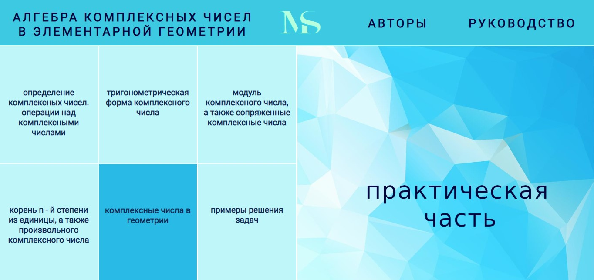
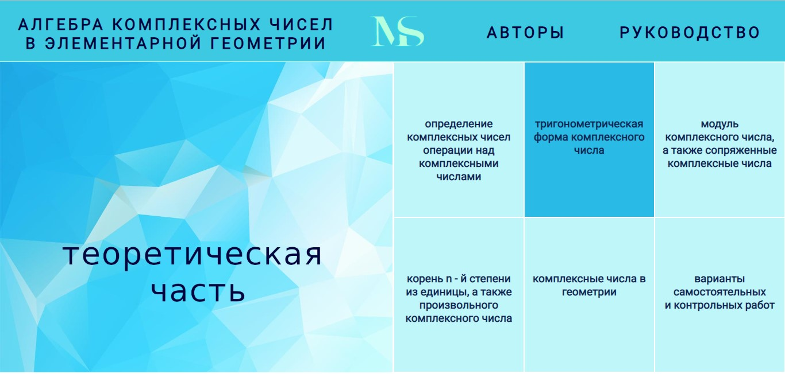

как пользоваться учебником
Учебник состоит из двух частей:
Часть 1 содержит теоретическую базу для изучения поля комплексных чисел и работы с ними.
При наведении на блок, откроются карточки с темами для изучения.
Выбирете нужную вам тему и нажмите по ней. После чего вам откроется страница с теорией. Можете приступать к изучению. Когда закончите можете переходить к блоку с практикой и закрепить усвоенные понятия.
Часть 2 содержит практическую базу для закрепления полученных знаний.
При наведении на блок, откроются карточки с темами для изучения.
Выбирете нужную вам тему и нажмите по ней. После чего вам откроется страница с задачами. Можете приступать к их решению. Когда закончите решать введите правильные варианты ответов в соответствующие поля и нажмите кнопку "проверить" (на экране отобразится процент выполненных заданий). Если что-то не понятно или забыли какую-то тему - вернитесь к соответсвующему блоку с теорией.